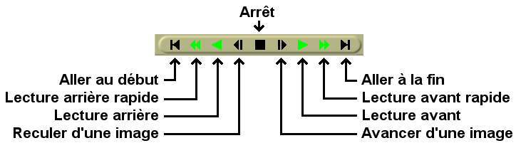

| [ << ] | [ >> ] | [Top] | [Table des matières] | [Index] | [ ? ] |
Les commandes de transport sont aussi utiles pour la navigation qu'elles le sont pour la lecture, c'est pourquoi elles sont décrites dans cette section qui concerne la navigation. Chacune des fenêtres de visionneuse, de composition et de programme possède un panneau de navigation.

Le panneau de transport.
Le panneau de transport peut être contrôlé par le clavier ou par l'interface graphique. Pour chacune des opérations qu'il permet d'effectuer, la position de départ est le point d'insertion dans la fenêtre du programme et la navette dans la fenêtre de composition. La position de fin est soit la fin soit le début de la timeline ou la fin ou le début de la région sélectionnée si elle existe.
L'orientation du départ ou de la fin dépend du sens de la lecture. Si elle se déroule vers l'avant, la position de fin est la fin de la région sélectionnée. En cas de la lecture en arrière, la position de fin est le début de la région sélectionnée.
Le point d'insertion se déplace de façon à suivre la lecture de la piste. Lorsque la lecture s'arrête, le point d'insertion reste à l'endroit où s'est arrêtée la lecture. Ce qui signifie que lorsque vous effectuez une lecture, vous modifiez la position du point d'insertion.
L'interface clavier est habituellement la plus rapide et comporte différents raccourcis. Les touches de transport sont disposées sous la forme d'un T renversé sur le pavé numérique.
4 | Déplacement arrière d'une image (image par image) | 5 | Déplacement arrière lent | 6 | Déplacement arrière normal (lecture arrière) | + | Déplacement arrière rapide |
1 | Avancer d'une image (image par image) | 2 | Déplacement avant lent | 3 | Déplacement avant normal (lecture avant) | Entrée | Avance rapide |
0 | Arrêt |
Presser une touche quelconque du clavier deux fois permet d'entrer en mode pause.
Lorsque l'on utilise la fonction d'avance image par image, le comportement peut sembler étrange. Si vous avancez d'une image, puis reculez d'une image, l'image affichée ne change pas. En effet la position de lecture n'est pas l'image mais l'instant entre deux images. L'image rendue est la zone que la tête de lecture traverse. Lorsque vous incrémentez le temps entre deux images puis le décrémentez, vous rencontrez deux fois la même image et c'est donc la même image qui est affichée.
Le comportement des commandes de déplacement change si vous maintenez la touche CTRL enfoncée en utilisant une de ces touches. Ceci fait que le point de départ devient le point d'entrée si vous effectuez une lecture avant et le point de sortie si vous faites une lecture arrière. Lors d'une lecture avant, le point de sortie devient le point de fin et lors d'une lecture arrière, le point d'entrée devient le point de fin. S'il n'y a pas de point d'entrée/sortie indiqué, le comportement revient alors à utiliser le point d'insertion et les limites de pistes comme points de départ et de fin.
Il est possible d'utiliser un périphérique de type Jog/Shuttle(1)
| [ << ] | [ >> ] | [Top] | [Table des matières] | [Index] | [ ? ] |
This document was generated on le 4 Février 2016 using texi2html 1.76.